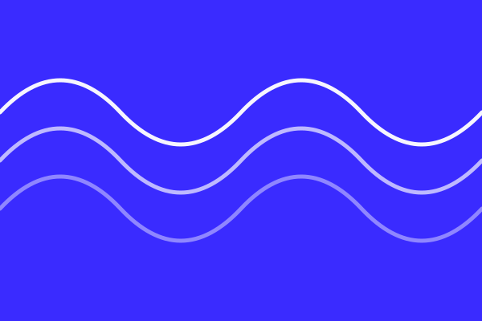
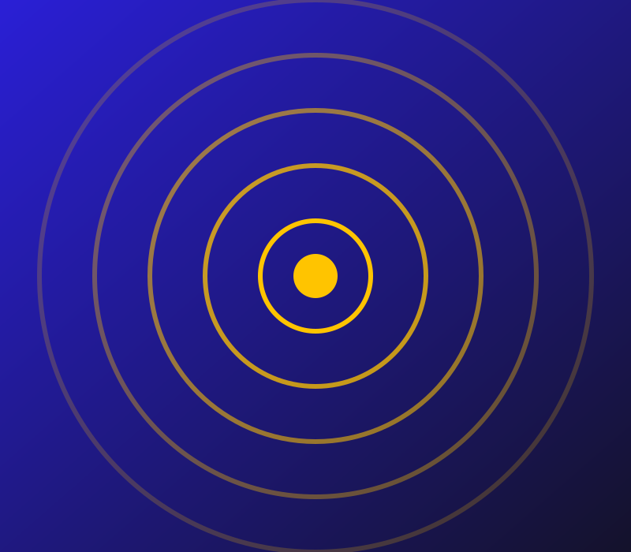

Subah Sawera
Morning news, weather and a request song to start the day.

News in three languages, local music and phone-in talk shows, made by volunteers and broadcast to 40,000 listeners.

Morning news, weather and a request song to start the day.
Callers raise local problems, and guests from the council answer live.
Two hours of old Hindi film songs, chosen by listeners.
School and college students present their own stories and music.
No shows match that search. Try a different word.
Checking what is on air…
| Time | Show | Language | Host |
|---|---|---|---|
| 6:00 – 8:00 | Subah Sawera | Hindi | Neha Verma |
| 12:00 – 13:00 | Local News Bulletin | Hindi, English | Newsroom team |
| 17:00 – 18:30 | Mohalla Mic | Hindi | Imran Qureshi |
| 19:00 – 20:00 | Young Voices | Hindi, English | Student volunteers |
| 21:00 – 23:00 | Raat Ki Dhun | Hindi, Urdu | Ravi Tiwari |
A caller mentioned one dark lane on Mohalla Mic. Within a week the ward office had visited, and the programme now ends each show with a list of open complaints and who is handling them.
Read the story: How a Saturday call-in fixed a broken streetlightSix weekend sessions on microphones, editing and interviewing. No experience needed.
Apply to train for volunteer training in NovemberListeners outside the broadcast range can now follow the station online.
How to listen to the new 24-hour streamTarang runs on listener donations and volunteer time. Monthly supporters keep the transmitter running.